读得进去
把一个文件夹导入成一门课。PDF、HTML、Markdown、纯文本都能打开，整门课的资料可以一起全文搜索。
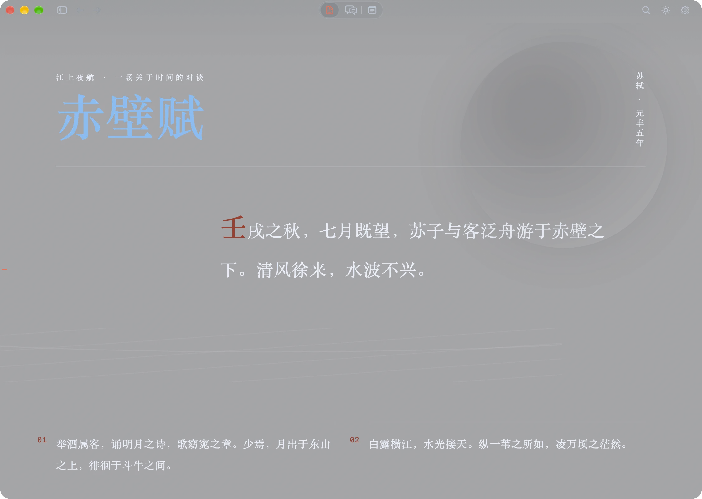
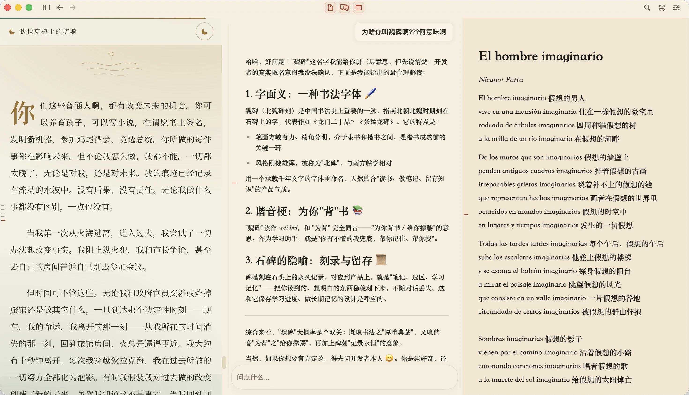
阅读、对话、笔记并排摆开，也能各自铺满整个窗口。
把一个文件夹导入成一门课。PDF、HTML、Markdown、纯文本都能打开，整门课的资料可以一起全文搜索。

选中一段文字直接提问。回答里的引用一点就回到原文，原文里的下划线也能把你带回那次对话。
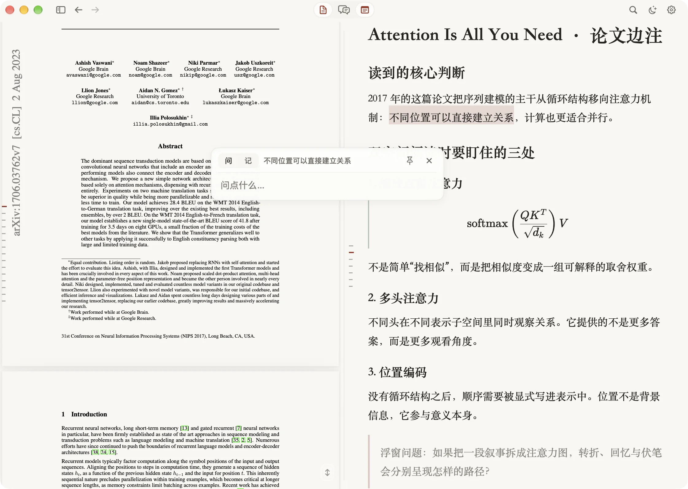
Markdown 笔记，图片、公式、代码块都能插。AI 想改你的笔记，会先摆出一份提案，你确认了才写入。
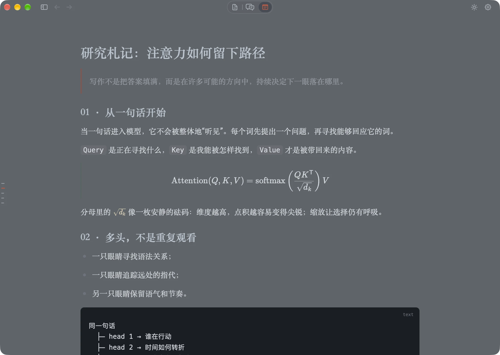
这是魏碑里提问的样子，在网页上复刻了一份。选中下面任意几个字，或者让我们替你选。
壬戌之秋，七月既望，苏子与客泛舟游于赤壁之下。清风徐来，水波不兴。举酒属客，诵明月之诗，歌窈窕之章。
少焉，月出于东山之上，徘徊于斗牛之间。白露横江，水光接天。纵一苇之所如，凌万顷之茫然。
全局字号用 ⌘ + / − 随时调。
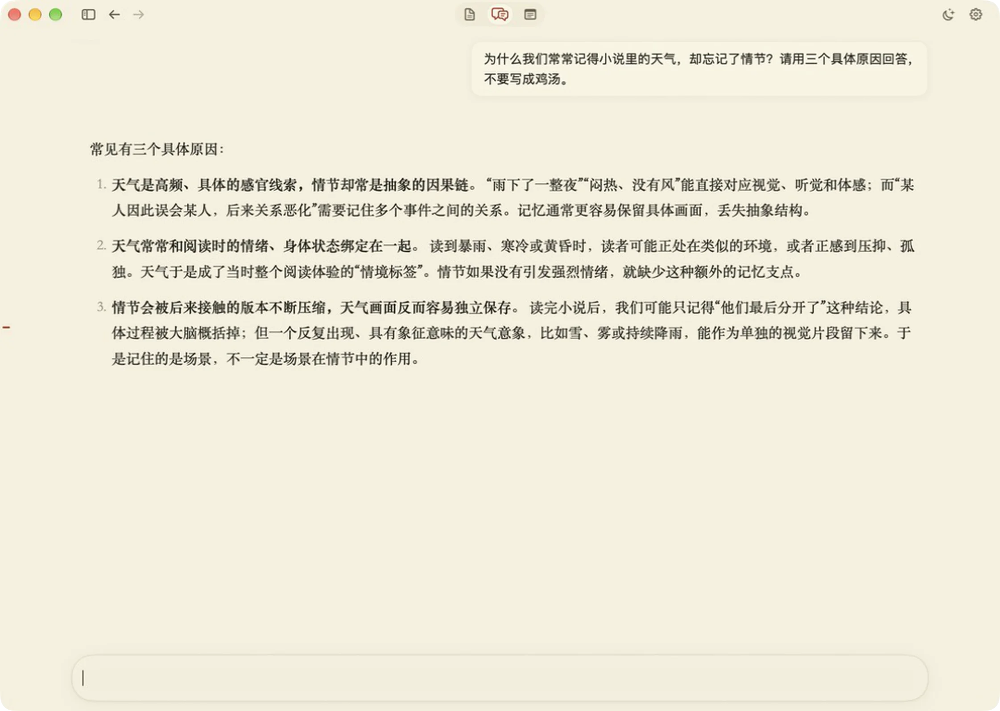
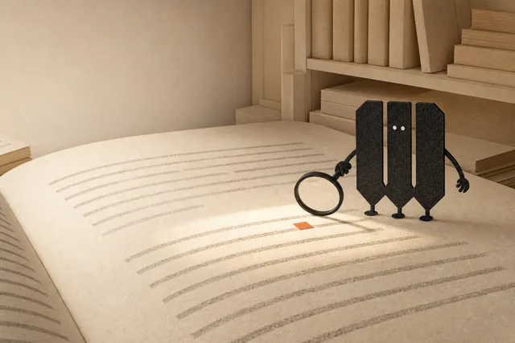
课程、笔记、全文索引和学习记忆都保存在本机。读资料、写笔记，用不着任何模型。
AI 想改笔记和出处，都得先把改动摆到你面前，你确认后才落笔。
AI 只能用魏碑提供的限定工具读资料，没有终端，也碰不到任意文件。
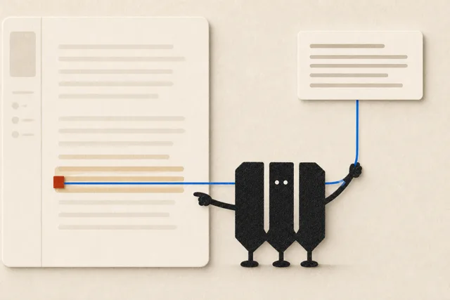
内置常用预设，也支持订阅登录、本地 llama.cpp 和自定义 OpenAI 兼容接口。
魏碑里那个 W 形的小伙伴。三只脚，两只眼睛，身边的红色小方块叫小朱。
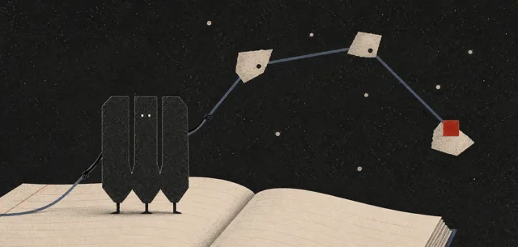
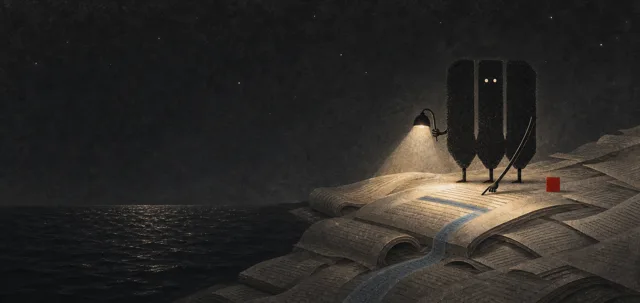
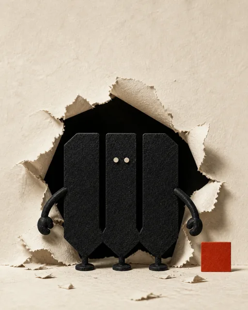
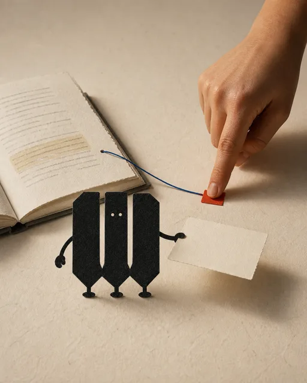
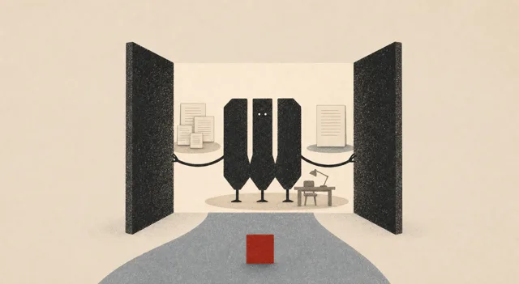
长时间阅读、摘抄、亲手记笔记，就算完全离开 AI，本身就是有意义的事。
正在查询最新版本…
$ git clone https://github.com/WroughtMind/weibei.git
$ cd weibei
$ npm ci
$ ./script/build_and_run.sh镜像仓库在 Codeberg